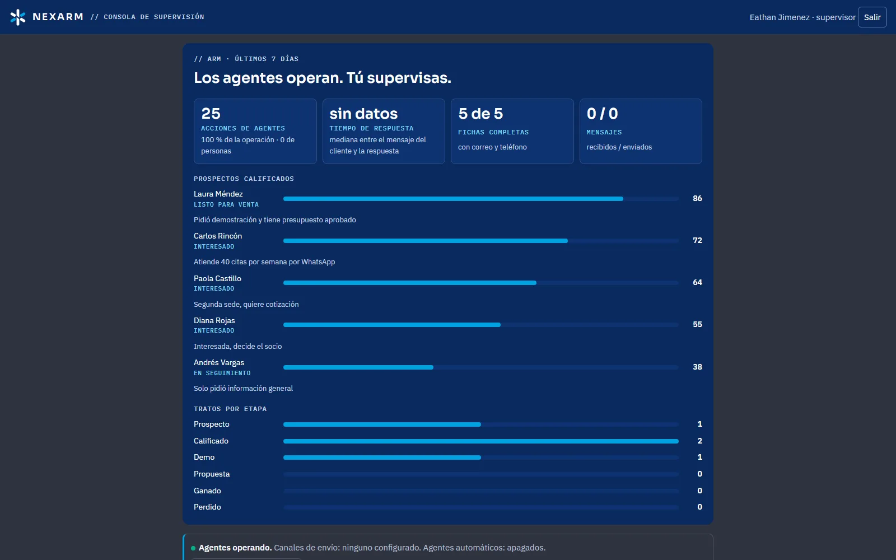

// Neona Tech · Barranquilla, Colombia
Agentes de IA que venden. Personas que deciden.
Nexarm es un CRM que operan agentes de IA. Cada acción pasa por siete pasos de control y queda escrita en un libro de auditoría.
Diseñado conforme a ISO 9001 · ISO/IEC 27001 · ISO/IEC 42001
// 01 · Lo logrado
Ya funciona, y se puede comprobar.
Estas cifras salen del repositorio público y de sus pruebas del 22 de noviembre de 2026.
Fases entregadas
Del núcleo del CRM a los agentes automáticos ante cada mensaje.
Comprobaciones pasan
Una sola orden, pnpm test, las corre todas.
Pasos por acción
Ninguna acción entra al CRM sin recorrerlos, en orden.
Lecciones escritas
Cada tropiezo quedó como regla con evidencia y veredicto.
// 02 · Qué es
Tres frases explican todo el producto.
El agente
Opera
Crea contactos, mueve tratos, escribe y hace seguimiento con herramientas MCP.
La persona
Supervisa
Aprueba, audita, fija políticas y suspende desde la consola.
El sistema
Impone las reglas
La aprobación humana la exige el servidor. No depende de lo que diga el prompt.
Funciona con los agentes de venta propios de Nexarm y con el Claude, ChatGPT o Cursor de cada cliente, bajo las mismas reglas.
// 03 · Por qué ahora
La gente ya pregunta a la IA antes que a un vendedor.
Personas usan cada mes las respuestas de IA de Google.
Fuente: Google I/O, mayo de 2026
Personas usan ChatGPT cada semana.
Fuente: OpenAI, febrero de 2026
Caída proyectada del volumen de búsqueda tradicional a 2026.
Fuente: Gartner, 19 de febrero de 2024 (proyección)
// 04 · La diferencia
CRM con IA ya existe. Lo que falta es el control.
Agente suelto
- Responde al cliente sin que nadie lea antes.
- Comparte una sola clave con todo el sistema.
- Si se equivoca, te enteras por el cliente.
- No hay registro confiable de lo que hizo.
Agente en Nexarm
- Redacta, y una persona aprueba o rechaza.
- Tiene credencial y rol propios.
- Se suspende con un clic, o todos a la vez.
- Cada acción queda en un libro encadenado y se puede revertir.
// 05 · La pasarela
Siete pasos, siempre en el mismo orden.
Toca cada paso para ver qué revisa.
// 06 · La consola
Lo que ve la persona que supervisa.
Capturas de la consola y del tablero del CRM, con datos ficticios.

// 07 · La marca
Una sola cara para el producto.
Nexarm hereda el azul, el cian y las tres tipografías de Neona Tech.
Paleta
Azul profundo, cian de acción, verde de «ejecutado» y antracita.
Geométrica y firme, para decir una sola idea.
Texto largo, tablas y formularios.
Etiquetas, estados y código.
// 08 · De dónde viene
Hecho en Barranquilla.
Neona Tech trabaja desde la Cra. 52 No. 79-19, en Barranquilla, Atlántico.
Video ilustrativo generado con IA.// 09 · El evento
Semana T, en Barranquilla.
Del 16 al 21 de noviembre de 2026. Fotos tomadas por el equipo de Neona Tech en el salón principal.
Semana T es un evento de sus organizadores. Las marcas que aparecen en pantalla pertenecen a sus dueños.
// 10 · Preguntas
Lo que más nos preguntan.
¿Qué es MCP?
Es un protocolo abierto que permite a un agente de IA usar herramientas de forma controlada. En Nexarm, cada herramienta del CRM se ofrece por MCP y pasa por la pasarela.
¿Puedo usar mi propio asistente?
Sí. El Claude, ChatGPT o Cursor de cada cliente se conecta con OAuth 2.1 y PKCE, y queda bajo las mismas reglas que los agentes propios.
¿Qué pasa si el agente se equivoca?
Una persona deshace la acción desde el libro de auditoría. Un botón detiene a todos los agentes de un cliente.
¿Nexarm está certificado en ISO?
Nexarm está diseñado conforme a ISO 9001:2015, ISO/IEC 27001:2022 e ISO/IEC 42001:2023. Las normas certifican el sistema de gestión de una empresa, no un programa.
¿Cómo se construyó?
Con agentes de IA y un método que convierte cada tropiezo en una regla comprobada. Está publicado paso a paso en Cómo construimos Nexarm.
// Siguiente paso
Míralo trabajar con un caso tuyo.
Trae una conversación real de tu negocio y la recorremos por los siete pasos.